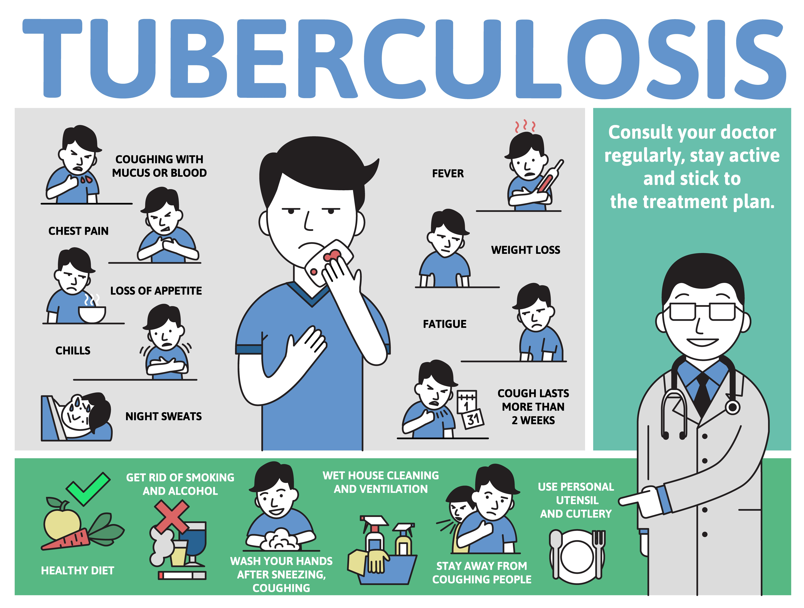

symptoms

What Are the Symptoms of TB?
A person with latent, or inactive, TB will have no symptoms. You may still have a TB infection, but the bacteria
in your body is not yet causing harm.
Symptoms of active TB include:
- A cough that lasts more than three weeks
- Loss of appetite and unintentional weight loss
- Fever
- Chills
- Night sweats
You may experience other symptoms related to the function of a specific organ or system that is affected.
Coughing up blood or mucus (sputum) is a sign of in TB of the lungs. Bone pain may mean that the bacteria have
invaded your bones.
These symptoms can also occur with other diseases, so it is important to see a healthcare provider and to let them
find out if you have TB. If you think you have been exposed to TB, get a TB test.
How Is TB Diagnosed?
Your doctor will start by collecting a patient history to determine if you may have been exposed. During a
physical exam, they will use a stethoscope to listen to your lungs and check the lymph nodes in your neck for
swelling.
If your doctor suspects TB, they may order a skin or blood test
The skin test is done by injecting a small amount of fluid called tuberculin into the skin in the arm. You will
be told to return to the office within 48 to 72 hours to have a healthcare worker check the arm to see if a bump
or an induration (thickening) of the skin has developed. It may be difficult to feel so an experienced healthcare
worker should examine the reaction. The healthcare worker will measure the bump or induration and tell you if your
reaction to the test is positive or negative. If it's positive, it usually means you have been infected with the
TB germ. It does not tell whether you have developed clinically active TB disease. The skin test isn’t 100%
accurate, meaning you may have a false-positive or a false-negative, so your doctor may order further testing
regardless of the result.
The TB blood test measures how your immune system reacts to the germs that cause TB. This information will be
used to more precisely confirm or rule out latent or active TB. It requires only one office visit.
If the skin or blood tests indicate the need for further analysis, your doctor may order a chest X-ray or CT scan
to look for visible signs of TB in your lungs. They may also check your sputum (coughed-up mucus) for bacteria, to
see whether you have clinically active TB disease and if so, which strain of TB you have. These tests can take one
to two months before results are available.
Overview
Tuberculosis (TB) is a potentially serious infectious disease that mainly affects the lungs. The bacteria that
cause tuberculosis are spread from person to person through tiny droplets released into the air via coughs and
sneezes.
Once rare in developed countries, tuberculosis infections began increasing in 1985, partly because of the
emergence of HIV, the virus that causes AIDS. HIV weakens a person's immune system, so it can't fight the TB
germs. In the United States, because of stronger control programs, tuberculosis began to decrease again in 1993.
But it remains a concern.
Many tuberculosis strains resist the drugs most used to treat the disease. People with active tuberculosis must
take many types of medications for months to get rid of the infection and prevent antibiotic resistance.